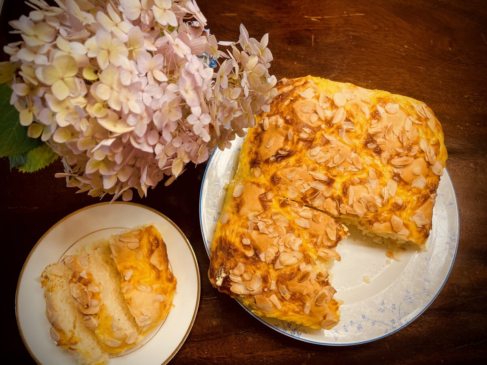
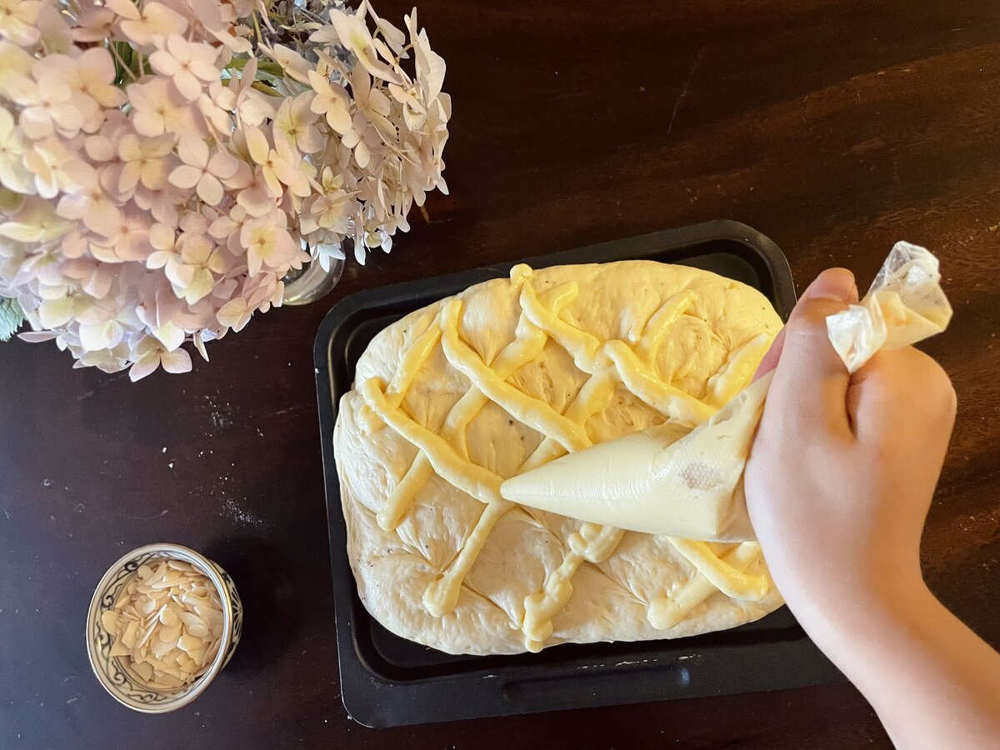
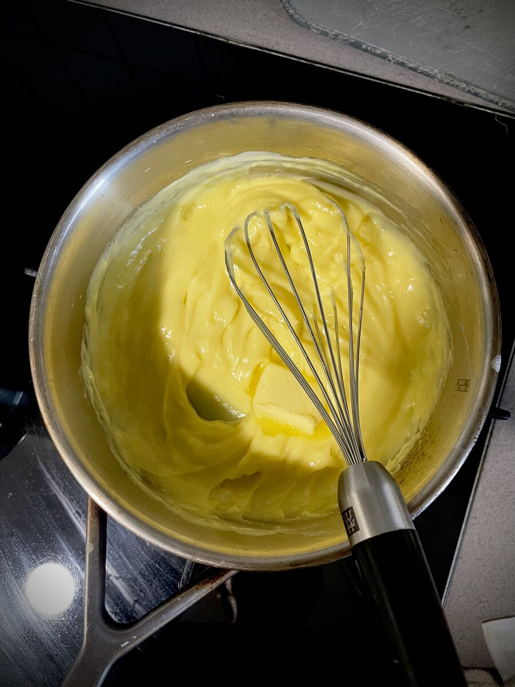
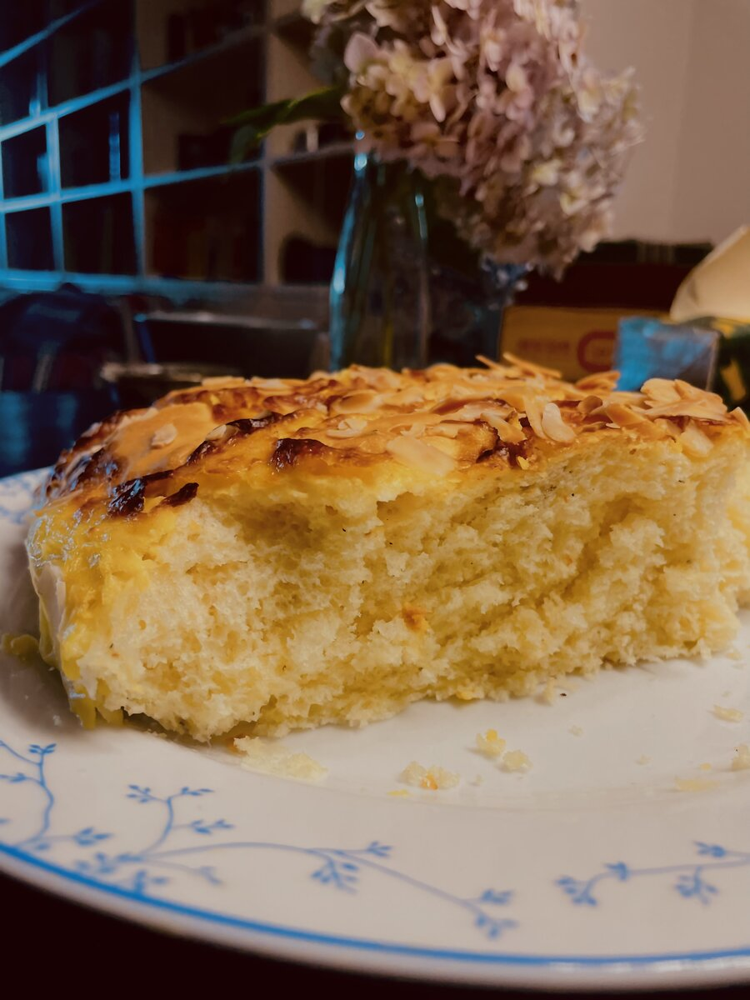
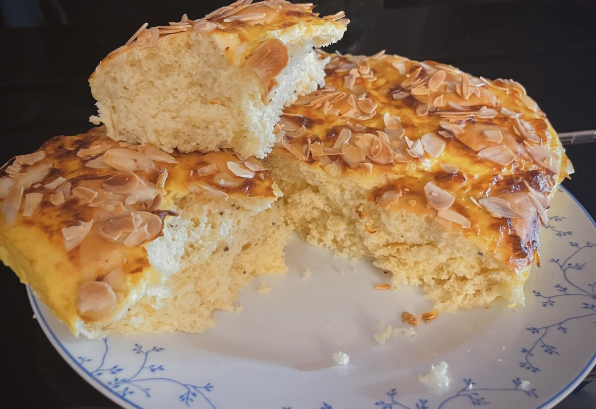

La Revetlla de Sant Joan's coca — nothing marks midsummer in Catalonia quite like a shared slice of this at a bonfire.
Serves 8 · Dough rises twice · Bake 30 min
Soft, buttery dough with pastry cream, summery citrus zest, and anise. Fresh, floral, and lightly spiced notes. Crunchy pine nuts and sugar topping.

Piping the pastry cream lattice just before decoration
In many Northern Hemisphere cultures and regions, when the summer solstice occurs and days begin to shorten, bonfires are lit to draw the sun and ward off evil spirits. During the revetlla de Sant Joan — Saint John's Eve — coca de Sant Joan is served during social gatherings; traditionally, they are baked around bonfires. The word "coca" refers to flat baked goods found throughout Catalonia and neighboring regions, which interestingly likely evolved that shape for communal oven bakes. The big oval shape is also said to resemble the sun, fitting for the summer event. The toppings are bright and festive, the pine nuts and sugar prized for celebrations of abundance.
These days, coca de Sant Joan is a staple of the celebration across Catalonia, and you'll find it just as beloved in Valencia and the Balearic Islands too. Every year on the evening of 23 June, families and friends spill outside to light bonfires, set off fireworks and firecrackers, and share slices of coca washed down with a glass of cava. In bakeries you'll also find versions around that time loaded with pastry cream, whipped cream, chocolate, marzipan, or fresh fruit.
Coca de Sant Joan is about a lot more than dessert. It's a moment that marks the turn of the season — a tradition that somehow weaves together ancient solstice rituals, Christian heritage, and generations of local baking. All in one delicious slice.
Star ingredient — pastry cream: Ok, maybe pastry cream isn't an ingredient exactly, but I love it for its simple and gentle flavor and the process of making it. It's one of those things you think is really hard to make but it really isn't. It's often found in many heavenly pastries and breads in bakeries and cafés, and when you make it yourself it really makes you fall in love with baking — I made that? In 10 minutes? It's also so fun to make and one of those things you really try to perfect over time.

Pastry cream — thickened, silky, and ready for butter
Coca de Sant Joan is a fluffy, big, brioche-like confection traditionally decorated with a pastry cream lattice along with pine nuts and bright candied fruits, although it varies greatly from region to region, both in flavor and appearance. Don't go thinking this is just going to taste like plain bread with some toppings — I can assure you it's truly unique. The fresh, citrusy, and spiced fragrance is like nothing else; paired with the warm butter and cream, it really is a perfect welcome for the summer during this special occasion. This light bread is nice on its own, although any savory drinks like milk, coffee, or hot chocolate also go hand in hand with coca de Sant Joan, as they do with breads and pastries in general.
Serves 8. Measurements are guidelines — eyeball and adjust as you go.

Just out of the oven — caramelised pastry cream and toasted almonds

The cross-section — light, pillowy crumb with caramelised cream and almonds all the way through
Make-ahead tip: The dough can do its first rise overnight in the fridge. Take it out 30 minutes before shaping.
When making the custard, save some egg and warm milk for the coca's egg wash and blooming the yeast later.
Soak anise, cinnamon, and sugar in liquor for 2 weeks ahead of time to make the anise liqueur. If you can't find or make anise liqueur, you can use 1 tsp anise extract or simply leave it out and increase the vanilla.
Bread is known to be quite hardy and stores well at room temperature — and I'm a firm believer that bread is better stored outside — but because this bread is special for a special occasion, the custard-topped bread needs to be refrigerated. It's best eaten within 2–3 days. Warm it however you'd like to refresh the texture. Obviously, this bread is best eaten fresh, right out of the oven. All the more reason to give this recipe a try!
For me, coca de Sant Joan is a simple pleasure. Knowing its history and origins, I now appreciate things I take for granted — things like sugar and bread, how people once viewed these things as precious celebrations.